Here are methods to check Python Version
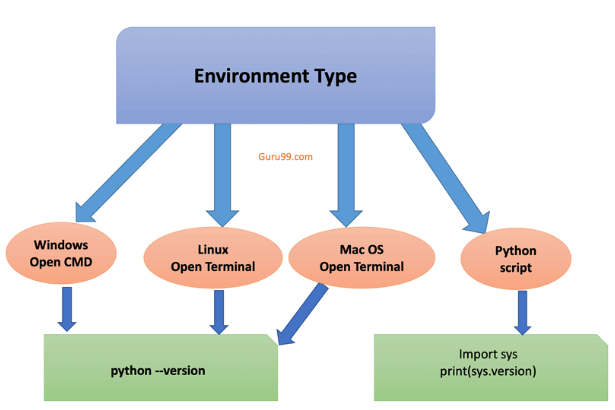| Commands | Where | What | Output |
|---|---|---|---|
| python –version | Command | Windows/Mac/Linux | Python 3.10.7 |
| python -v | line or | ||
| python -vv | Terminal | ||
| Import sys sys. version |
Script | Use as string | ‘3.10.7 (tags/v3.10.7:6cc6b13, Sep 5 2022, 14:08:36) [MSC v.1933 64 bit (AMD64)]’ |
| Import platform Platform.python_version() |
Script | String of short format | ‘3.10.7’ |
| Platform.python_version_tuple() | Script | Tuple of short format | (‘3’,’10’,’7’) |
Python scripts can identify the version of Python installed on the computer. It enables you to validate if multiple versions are installed in the system. The script developed to check the Python version remains the same for windows OS, Mac OS, and Linux distributions. You can create a script by importing either the platform module or sys module of python.
The following code can be used for the sys module as shown below:
Command line Code:
import sys
sys. version
Output:
'3.10.7 (tags/v3.10.7:6cc6b13, Sep 5 2022, 14:08:36) [MSC v.1933 64 bit (AMD64)]'
Refer to the following command line screenshot:
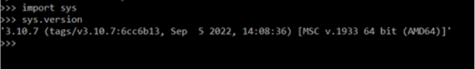To execute the above script, invoke python first in the command line to get the above results.
The following code can be used for the sys module as shown below:
Command line Code:
import platform
print(platform.python_version())
Output:
3.10.7
Refer to the following command line screenshot:
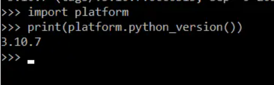Use the following code in the web-based interpreter as shown below: –
Python code:
from platform import python_version
print("Current Python Version-", python_version())
Output:
Current Python Version- 3.8.10
Refer to the following web-based interpreter screenshot:
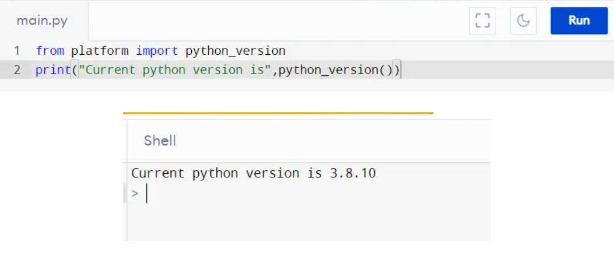To get the information on the version of python, use the following script as shown below:
Python command:
print(sys.version_info)
Output:
Sys.version_info(major=3, minor=10,micro=7,releaselevel=’final’,serial=0)
Screenshot:
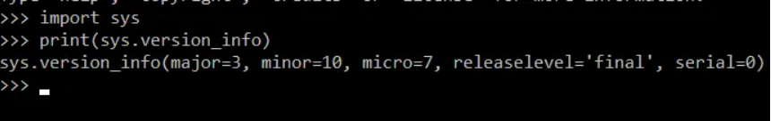To get the tuple information on the version of python, use the following script as shown below: –
Python command:
print(type(sys.version_info))
Output:
class ‘sys.version_info’>
Screenshot
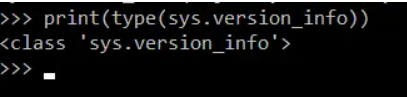To get the major information on the version of python, use the following script as shown below: –
Python command:
print(sys.version_info[0])
Output
3
Screenshot:
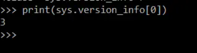Python command:
print(sys.version_info.major)
Output:
3
Screenshot
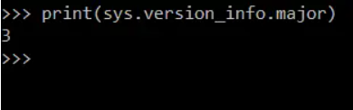To get the major information on the version of python, use the following script as shown below: –
Python command:
Import platform
print(platform.python_version())
Output:
3.10.7
Screenshot
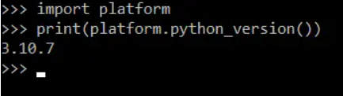To get the major information on the version of python, use the following script as shown below: –
Python command:
print(type(platform.python_version()))
Output:
class ‘str’>
Screenshot
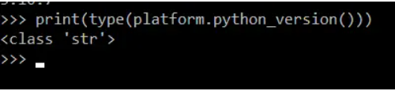To get the major information on the version of python, use the following script as shown below: –
Python command:
print(platform.python_version_tuple())
Output:
(‘3’,’7’,’0’)
Screenshot
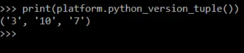To get the major information on the version of python, use the following script as shown below: –
Python command:
print(type(platform.python_version_tuple())
Output:
class ‘tuple’>
Screenshot
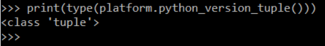Here are steps to check the Python version using Windows Command Line:
step1) Open the command prompt by typing cmd
step2) When the command prompt opens, type the following command in the CLI to get the version name of Python.
Command code:
python3 --version
Output:
Python 3.10.7
Note: Before running the command, ensure that Python is pre-installed on the computer.
Alternatively, open a command line and type the below command:
Command code:
python3 --version
Output:
Python 3.10.7
Refer to the below screenshot for the results executed in the command prompt:
Screenshot
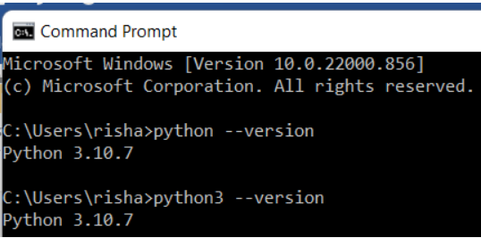To check the Python version in Windows PowerShell:
Open the power shell prompt by typing PowerShell in the start menu and clicking on Windows PowerShell.
The user must type the following command in PowerShell to obtain the Python version name.
However, before running this command, ensure that Python is pre-installed on the computer.
Following is the command typed in the command line:
PowerShell code:
python3 --version
Output:
Python 3.10.7
Alternatively, open a command line and type the below command:
PowerShell code:
python3 --version
Output:
Python 3.10.7
See this screenshot for the results executed in the command prompt:
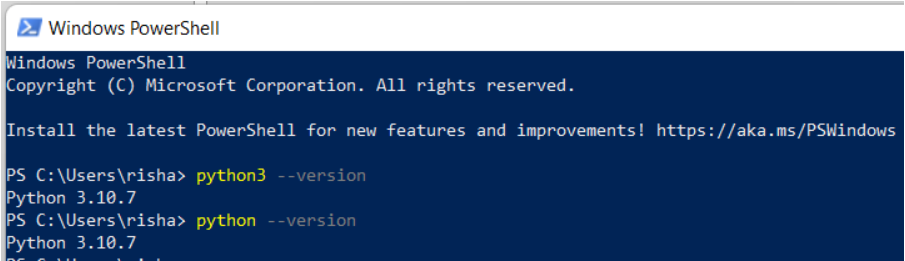Here are steps to check the Python Version in Linux:
Step 1) To check the Python version in Linux, open the Terminal
Step 2) This opens the below window as shown below:
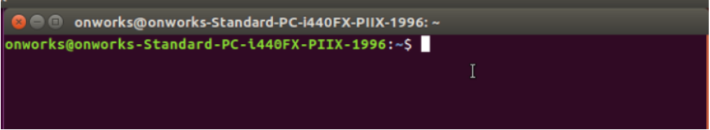Step 3) Type the below command in the Terminal of Linux to get the version name of Python.
Following is the command typed in the Terminal:
Linux Terminal code:
python3 --version
Output:
Python 3.5.2
Alternatively, open the Terminal and type the below command:
Linux Terminal code:
python--version
Output:
Python 2.7.12
The above command helps the user check whether python 2 is installed in the system. Refer to the below screenshot for the results executed in the Linux terminal:
Screenshot:
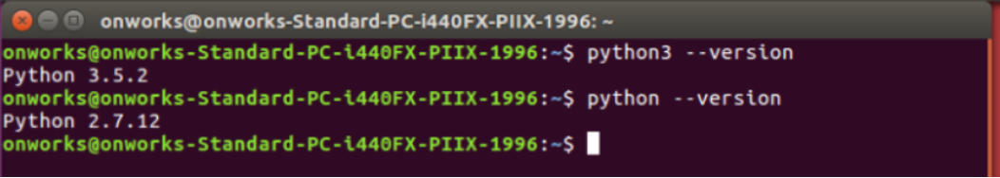Ensure that Python is pre-installed on the operating system of the computer. Most advanced versions of Linux distributions, such as Ubuntu and Fedora, have Python pre-installed in it.
Alternatively, the following commands can be used in the Linux terminal to get the version name of the Python installed in the distribution as listed below: –
Linux Terminal code:
python -VV
Output:
Python 2.7.12
Screenshot: –
Linux Terminal code:
Python3 -c “import sys; print(sys. version).”
Output:
3.5.2(default, Nov 12 2018, 13:43:14)
[GCC 5.4.0 20160609]
Screenshot: –
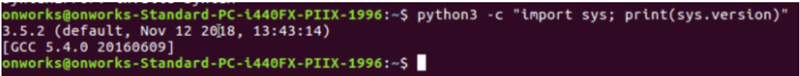Linux Terminal code:
Python3 -c “import sys; print(sys.version_info)”
Output:
sys.version_info(major=3,minor=2,releaselevel=’final’,serial=0)
Screenshot: –
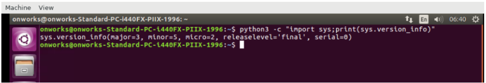Linux Terminal code:
Python3 -c “import platform; print(platform.python_version())”
Output:
3.5.2
Screenshot: –
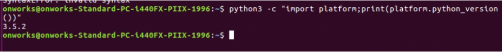The only difference in the above commands is the use of python modules. This module provides names for variables and functions that are used to manipulate different parts of the Python environment. The module gets underlying platform data such as operating system, hardware, and interpreter.
Here are steps to check the Python version:
Step 1) To check the Python version in Mac OS
Open the Terminal by typing the terminal command in the search box in the top right corner of the Mac OS desktop menu and click on it.
Step 2) his opens the below window as shown below:
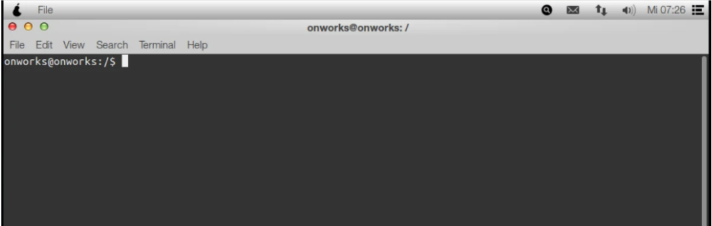Step 3) To obtain the Python version name, you need to use the following command in the Terminal window.
Note: However, before running the command, ensure that Python is pre-installed on the computer. Most advanced versions of Mac OS distributions have Python pre-installed in it.
Following is the command typed in the Terminal:
Mac OS Terminal code:
python3 --version
Output:
Python 3.3.1
Alternatively, open the Terminal and type the below command:
Mac OS Terminal code:
python --version
Output:
Python 2.7.4
The above command helps the user check whether python 2 is installed in the system.
Refer to the below screenshot for the results executed in the Mac OS terminal:
Screenshot:
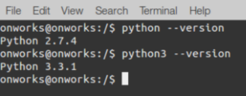There can be multiple Python versions installed on the computer system. Therefore, a computer can have both versions 2 and 3 installed.
To validate both versions, the user can open the command line and type in the following commands:
Command Line \ Terminal code:
python --version
OS Command:
python3 --version
Python 2 or Python 3
Here are comparisons of both versions:
Conclusion:
The coder can execute a single command to identify which version is installed in your computer’s operating system. You can do this by opening the command line of the operating system and typing below command as shown below:
Here are important Perquisites for the system before checking the version: